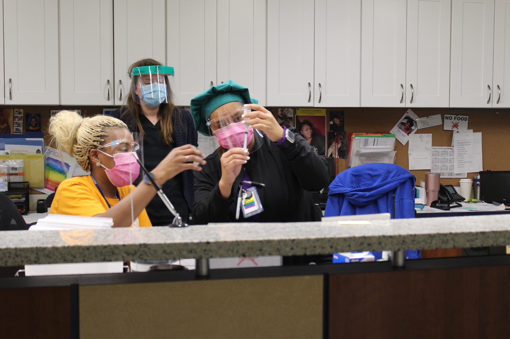

Maryland organizations prioritize vaccine distribution to homeless communities.
Photo by Nataliya Vaitkevich.
By Tori Bergel
April 26, 2021
On March 5, 2020, Maryland’s first three positive cases of COVID-19 were confirmed.
On March 30, 2020, Gov. Larry Hogan issued a stay-at-home order, keeping residents from work or school, and setting in motion a new normal for the state of pandemic-related anxiety to which the world is still accustomed.
On Dec. 11, the Food and Drug Administration approved administration of the first coronavirus vaccine in the U.S., developed by Pfizer-BioNTech.
This month, on April 6, over a year from when the pandemic began, Hogan announced that all Marylanders over the age of 16 were now eligible to receive a vaccine.
While the news gave the state its first true glimpse at a possible return to normalcy, some of the most vulnerable communities are still struggling to gain access to that same hope.
Individuals experiencing homelessness are one such population, and are highlighted by the Centers for Disease Control and Prevention as a “particularly vulnerable group” for COVID-19.
The CDC’s website explains that, “Homeless services are often provided in congregate settings, which could facilitate the spread of infection. Because many people experiencing homelessness are older adults or have underlying medical conditions, they may also be at increased risk for severe illness.”
“I think the pandemic has highlighted the extent to which a safe, stable place to stay is just so fundamental to health,” Kevin Lindamood, president and CEO of Health Care for the Homeless, told Capital News Service. “We as an organization have very much learned that housing is healthcare.”
The Department of Housing and Urban Development requires all Continuum of Care—the coordinating bodies working to address homelessness in each jurisdiction—to conduct annual point-in-time counts of their homeless populations on a given night within the last two weeks in January.
According to the Maryland Interagency Council on Homelessness, HUD uses these “snapshot” counts to help set funding throughout the country for institutions aiding those experiencing homelessness.
As of January of 2019, Maryland’s point-in-time homeless count was 6,561. The state has not yet released 2020 data, though the preliminary total is 6,302, according to the Maryland Department of Housing and Community Development.
HUD requires sheltered individuals be counted yearly, but unsheltered data is only required on odd-numbered years, so true counts may be higher.
“That count uses the narrowest of federal definitions, so it’s only those that are on the streets or in shelters. There are no fewer than five federal definitions of homelessness, and they don’t always agree with each other,” Lindamood said.
“Generally when you hear data about the numbers experiencing homelessness or you hear the national data, it’s using the HUD definition and it’s using a methodology, a point in time count, that’s really flawed. …I don’t think you can conclude how many people may experience homelessness over the course of a year by a count that takes place on one night…the actual number is likely much larger,” he added.
Health Care for the Homeless, a Baltimore-based organization aimed at ending homelessness, began limited vaccinations at the end of January, but since February, has been vaccinating individuals five days a week at increasing rates.
The organization has been vaccinating people out of their Fallsway clinic in downtown Baltimore, as well as through outreach programs at shelters and makeshift hotels-turned-shelters—something being done in many areas in order to provide much-needed housing while promoting social-distancing—in both the city and county. They have since administered over 2,000 doses—all Moderna except for 381 doses of the Johnson and Johnson—and vaccinated over 1,500 individuals fully.
"The real problem isn’t homelessness itself, that’s a symptom. The real problem is the kind of social structures that create it."
- Kevin Lindamood, president and CEO of Health Care for the Homeless
“People experiencing homelessness are far likelier than their house counterparts to die prematurely. And so we knew from the beginning that we had to keep our doors open to basic primary care, and ensure that people could get the support that they needed. Then at the same time we needed to slow the spread, develop a testing capacity and now develop a vaccination capacity,” Lindamood said.
Baltimore’s preliminary 2020 point-in-time count is 2,193, the most in the state, according to the Maryland housing department.
“The real problem isn’t homelessness itself, that’s a symptom. The real problem is the kind of social structures that create it; the wages, unemployment, widening gap between the rich and the poor, lack of access to healthcare and other safety net services. We’re particularly concerned, as we’re going through this pandemic, with the number of people now that are at risk of eviction, and may at some point soon not have a regular place to stay,” Lindamood said.
Health Care for the Homeless health care workers prep a dose of the Moderna vaccine. Photo courtesy of Health Care for the Homeless.
In Montgomery County, the Department of Health and Human Services’ Services to End and Prevent Homelessness has recently begun vaccination efforts for its homeless population.
As of April 15, the department has put on two rounds of vaccination clinics targeted toward those experiencing homelessness: The first took place on March 9 at three of the county’s shelters where a total of 191 people received an injection, the other occurred on April 12, where an additional 83 individuals were vaccinated. A small number of shelter staff were among those who got the vaccine.
As to why it took so long for the county to begin dosing this population, Amanda Harris, chief of Services to End and Prevent Homelessness within the Montgomery County Department of Health and Human Services, said it’s largely a supply issue.
“We only have control of the vaccines that the health department receives,” Harris said. “The county was working through the different priority groups and so the delay was because we hadn’t reached that priority group yet.”
Much like in Montgomery County and the larger Baltimore area, in Anne Arundel, vaccination priority was given to those in shelters and hotels.
The county also works with community partners to put on community clinics as an additional means for vaccination.
“We set a date, there’s usually 100 vaccines allocated to each site, and we’re doing that six days a week at various locations,” said Tonii Gedin, the Deputy Health Officer of Public Health within the Anne Arundel County Department of Health.
The Department of Housing & Human Services, formerly or also known as the Frederick Community Action Agency, in Frederick County has offered vaccinations to those in attendance for meals at county soup kitchens, through street outreach and at the Alan P. Linton, Jr. Emergency Shelter operated by the Religious Coalition for Emergency Human Needs, according to Janet Jones, assistant director of medical services within the department.
As of April 15, the department has vaccinated 73 individuals.
Both Anne Arundel and Frederick counties began vaccinating their homeless populations in January.
“I think it’s important to have access to the vaccine for those folks, and also to provide the education ...whether or not someone chooses to get the vaccine is their choice, but I think it’s more in terms of the access of being able to get it for underserved areas and underserved individuals, and that’s the key to the vaccination right now,” Jones said.
Access to the vaccine is particularly important because those experiencing homelessness are most often from marginalized communities. Both COVID-19 and homelessness disproportionately affect people of color.
According to the Maryland Interagency Council on Homelessness’ 2019 homlessness report, 57% of those experiencing homelessness in Maryland identify as African American—in comparison, as of July 1, 2019, only 31.1% of the state’s total population identified as Black or African American alone, according to the United States Census Bureau.
“For us, it’s really how can we ensure that people have access. And among those that we’re serving, the large majority of individuals that we serve are Black and Brown and other people of color, primarily African American and Latinx populations,” Lindamood said.
The AstraZeneca vaccine co-created by Oxford University and Vaccitech, and largely used in EU affiliated countries, was the first to see problems.
According to a press release sent out by the Medicines and Healthcare products Regulatory Agency earlier this month, in the United Kingdom as of March 31, 79 cases of blood clots were reported to the agency resulting in 19 deaths. All of the issues occured after the first dose.
The majority of those who developed complications were younger women, and almost all of those affected were middle-aged or younger.
Many countries have halted or put age suggestions on the vaccine’s distribution—the Australian Technical Advisory Group on Immunisation recommended AstraZeneca not be used in those under 50, and the Joint Committee on Vaccination and Immunisation in the United Kingdom recommended the same for those under 30 without underlying conditions —while Denmark became the first country to halt its usage altogether.
In the U.S., cases of blood clots have also been linked to Johnson and Johnson’s Janssen vaccine.
The CDC and FDA suggested a “pause” on usage of the single-dose vaccine starting April 13 based on a preliminary suggestion from the CDC’s Advisory Committee on Immunization Practices while it investigated the issue further.
As of April 21, 15 instances of blood clots were confirmed out of the 7.98 million doses administered up to that point, according to the advisory committee.
“Prioritizing populations experiencing homelessness is not just about altruism ... it’s about broader public health, and ensuring that the most vulnerable among us ... are vaccinated.”
- Kevin Lindamood, president and CEO of Health Care for the Homeless
All of the cases occurred in women—13 of whom were between the ages of 18 and 49, and 2 of whom were over 50. Three of the cases resulted in the individual’s death.
The CDC is currently looking into additional potential cases.
Given the extreme rarity of the clots, many health professionals have maintained that the benefits outweigh the risks.
“I am worried that this will only complicate overcoming hesitancy,” Harris said
Both rounds of clinics in Montgomery County used the Janssen vaccine. The department had halted its use after the pause was announced.
“I think it’s a game changer being able to have the single dose. Cause it’s been so hard to get people to just agree to get one dose, let alone two, so I think this will make a big difference,” Harris said.
She added that due to the transient nature of homelessness, a single-dose vaccine is easier to manage.
Though all three had also been using varying amounts of J&J, Lindamood, Gedin and Jones said they had all halted administration of the vaccine, but had kept operations going using only two-dose alternatives.
“Here’s the thing on J&J. We didn’t start with it. And the pause isn’t stopping our vaccination work,” Lindamood said at the time. “Is a single-dose vaccine helpful, desired by many, simpler to administer? Yes. Would it help us fully vaccinate more people at a faster pace? Sure. But has the pause stopped us from vaccinating? Not at all.”
On Friday, the FDA and the CDC lifted the pause on the Johnson & Johnson vaccine—however they advised that women under 50 “be aware” of the potential risk and the availability of other vaccines.
“Prioritizing populations experiencing homelessness is not just about altruism…it’s about broader public health, and ensuring that the most vulnerable among us, who can’t necessarily isolate at home, are vaccinated,” Lindamood said. “Let’s hope that one of the many lessons we’ve learned from a pandemic is that we need to do more to ensure that everyone has a safe and decent place to stay.
If you have any questions about getting vaccinated, visit the Maryland Department of Health's resource page. You can find information in other languages and answers to frequently asked questions. The page regularly provides updates and links to additional information on testing and contact tracing.
If you or someone you know are experiencing homelessness, visit the Department of Human Service's website where you can find contact information for the leading continuum of care locations across Maryland. You can also find more information on homelessness prevention and emergency assistance programs.
Maryland is currently in Phase 3, which means all Marylanders over 12 are eligible to recieve a vaccine. Visit the Department of Health's website to find the nearest vaccination clinic near you or schedule an appointment at a mass vaccination site. Health insurance is not required and vaccinations are free of charge.